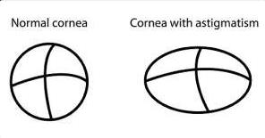

Refraction · Astigmatism
Astigmatism: definition & etiology
The eye does not have the same refractive power in all meridia. Parallel rays falling on the eye do not come to a point focus on the retina but form a line (a = not, stigma = point).
- It is not a spherical error;
- and can't be corrected by spherical lens.
Etiology
- Corneal cause: The commonest.
- a) Congenital.
- b) Acquired: As in cases of:
- Keratectasia (keratoconus) - Corneal facet - Corneal scars.
- Pressure upon the cornea by eyelid tumors or large chalazion.
- Postoperative flattening of the vertical meridian by a contracting limbal scar after cataract extraction.
- Lenticular causes:
- Early cataract - Subluxation of the lens – Lenticonus.
